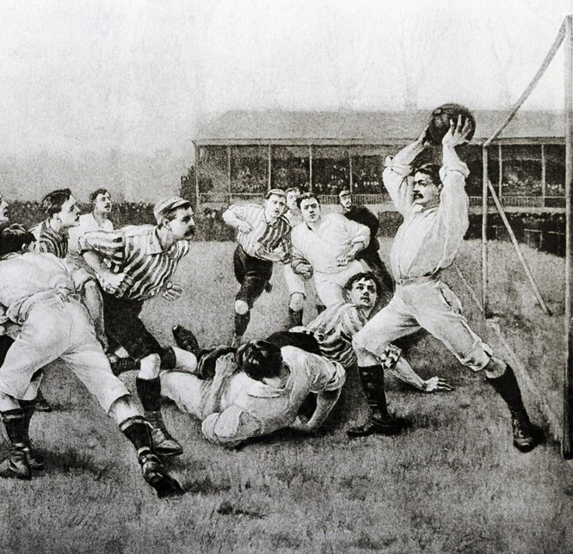
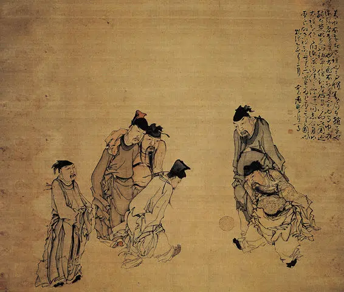

Origem do Futebol
A origem do futebol no Brasil
O futebol no Brasil teve origem em fins do século XIX, quando Charles William Miller, considerado o "pai do futebol", trouxe o jogo para o país. Isso porque ele era filho de pai escocês e mãe inglesa e esse esporte já era conhecido na Inglaterra.
O futebol na China Antiga
Na China Antiga, o futebol era representado principalmente pelo jogo chamado "cuju". Praticado desde a dinastia Han, "cuju" envolvia chutar uma bola de couro, frequentemente recheada com pelos, em direção a uma rede elevada. O jogo era jogado em um campo aberto e permitia que os jogadores usassem apenas os pés, refletindo um senso de competição e habilidade. Ele era popular entre os soldados e até mesmo promovido como parte do treinamento militar. "Cuju" é considerado um dos precursores do futebol moderno, oferecendo uma visão fascinante sobre como as práticas esportivas evoluíram ao longo do tempo.
inicialmente, era tanto treinar os soldados, quanto entreter a população. Vale ressaltar que, no começo, esse esporte era praticado somente por pessoas de alto nível econômico.
O futebol no Japão Antigo
Muito relacionado com o Cuju, e provavelmente inspirado nele, o chamado Kemari surgiu, provavelmente, em meados dos anos 600 no Japão. Trata-se de um dos jogos que mais se aproxima do futebol e é praticado por alguns japoneses até hoje.
O futebol na Grécia Antiga

Na antiga Grécia, havia um jogo similar ao futebol que se chamava Epísquiro (do grego, Episkiros). Esse jogo era realizado entre duas equipes, porém a quantidade de jogadores era maior: cerca de 15 em cada time. Uma característica marcante daquela prática, e que hoje é considerada falta, é que a bola podia ser carregada com as mãos por todos os jogadores. A ideia, muito similar ao futebol atual, era passar a bola e lançá-la na linha correspondente.
O futebol na Roma Antiga
Historiadores acreditam que o jogo de futebol na Roma Antiga era muito similar ao Episkiros e, provavelmente, teve origem no jogo grego. O nome dado a esse jogo era Harpasto (em latim, Harpastum) e, da mesma forma que o Episkiros, a ideia era lançar a bola na quadra do adversário.
Logo, ele se espalhou pela América Latina e se tornou cada vez mais popular. Em meados do século XX, o Brasil começa a ter um grande destaque a nível nacional e internacional. Aos poucos, foram sendo criados diversos clubes de futebol no país. Pelé e Garrincha foram duas personalidades que tiveram bastante êxito na década de 50 e 60, quando o Brasil conquistou 3 Copas do Mundo em 12 anos. Dessa forma, entre outros, Pelé e Garrincha fizeram o futebol brasileiro ser reconhecido e destacado a nível mundial.